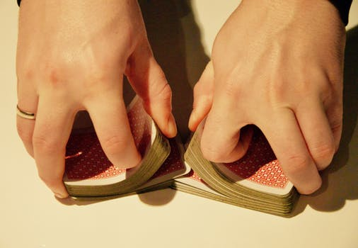

为了记住生词之类的时候有用的工具
打开 首页，单击《Go》!

https://mochihashi.github.io/memorizer/
|  | 随机输入单词表，随机的答题和答案自动地造成。 |
重复不到回答正确答题重复，所以容易记住。 |
|
Excel可以直接使用Excel整理的单词表。 |
|
离线可以离线使用，首页有游览器缓存。或者可以下载memorizer.zip，用游览器打开里面的index.html。 |
| English | Spanish |
|---|---|
| Hello | Hola |
| Good morning | Buenos días |
| Goodbye | Adiós |
| I don't know | No lo sé |
| Sorry | Lo siento |
| Thank you | Gracias |
| Yes | Si |
| No | No |